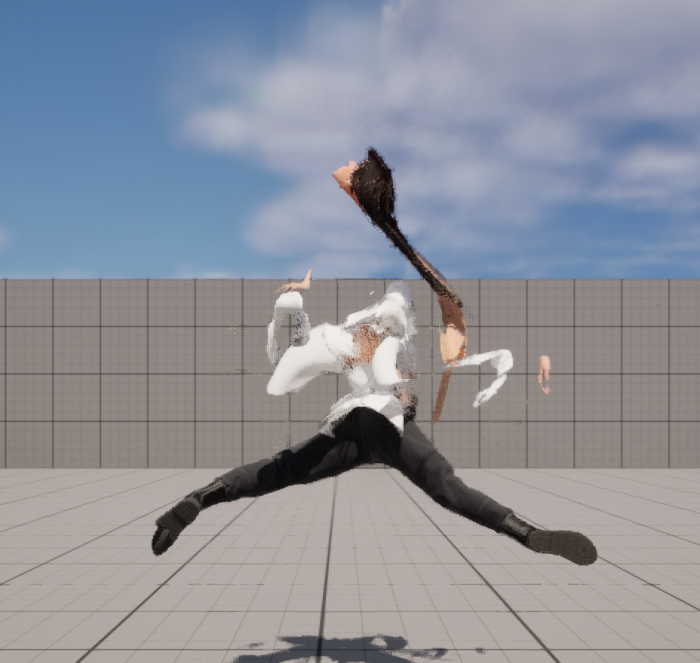

game
An Interactive experience, in which one finds out about the implications of having a body, it's physicality and what it means to one day lose it entirely.
In its current state, this is a prototype in which gameplay, agency and prompting are all part of a narrative. What does it really mean to be human? How do we deal with the fact that a large part of "us" is physical?
Download: lizi-anim.itch.io/your-body-is-dead
